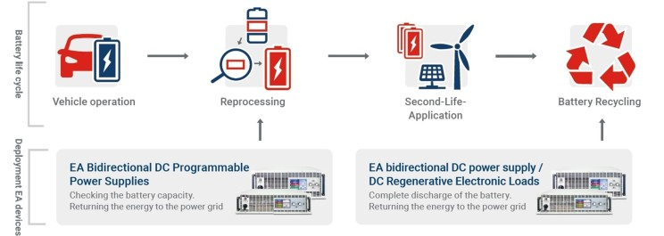
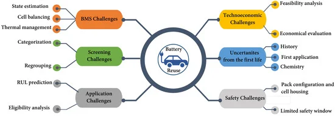
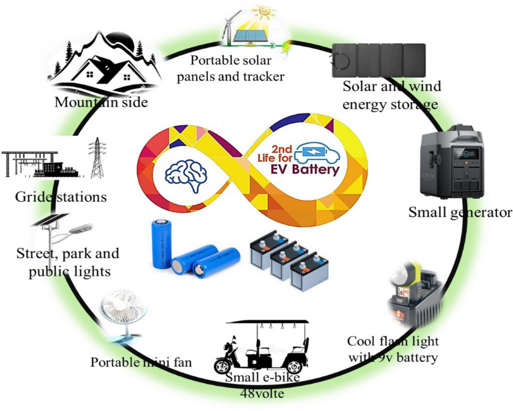
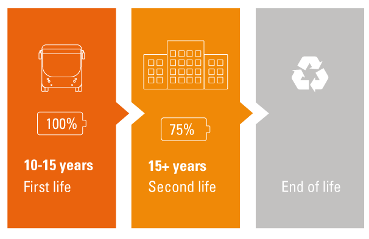

Introduction
The shift towards a greener future has led to an increased reliance on electric vehicles (EVs) and renewable energy sources. However, with this comes a unique challenge: what to do with the batteries once they no longer serve their original purpose. Second-life batteries are those repurposed from their initial use, such as in EVs, and are given a new lease on life in various applications. This solution presents an intriguing mix of challenges and opportunities as the world strives for more sustainable energy solutions.
What Are Second-Life Batteries?
Origins and Purpose
Second-life batteries are those that have outlived their primary use but still retain significant storage capacity. Primarily sourced from electric vehicles, these batteries typically have around 70–80% capacity when removed from EVs, making them ideal candidates for lower-demand applications.
Why Are Second-Life Batteries Important?
As battery production and disposal involve significant energy and environmental impact, repurposing batteries offers a practical solution. Second-life batteries reduce waste and decrease the environmental impact by extending the useful life of the materials involved. They offer a bridge in the transition to renewable energy by addressing energy storage needs without further taxing natural resources.
Benefits of Repurposing Batteries
Extending Battery Lifespan
Second-life batteries gain a longer lifespan in various applications, which helps to maximize the initial investment in their materials and manufacturing.
Reducing Waste and Environmental Impact
By diverting batteries from landfills, second-life applications significantly reduce environmental waste and the need for raw materials in new battery production, aligning well with sustainability goals.
Supporting Renewable Energy Storage
These batteries are well-suited for energy storage systems (ESS), allowing for the capture and storage of surplus energy generated by renewable sources, like solar or wind, and releasing it when demand is higher.
The Process of Battery Repurposing

Assessment and Selection
Not every battery is suitable for second-life use, so they undergo stringent testing to ensure safety, capacity, and reliability. Batteries with acceptable health levels are then selected for refurbishment.
Refurbishment and Testing
After selection, batteries are refurbished and tested for reliability. These tests assess parameters like capacity retention, charge cycles, and thermal stability to guarantee safe operation in second-life applications.
Integration into New Applications
The repurposed batteries are adapted and integrated into various energy storage solutions, such as residential energy systems or grid support. Some may also be used in EV charging infrastructure or industrial storage needs.
Key Challenges of Second-Life Batteries

Safety Concerns and Risks
Safety remains a critical challenge, as used batteries can have unpredictable performance and may pose risks of overheating or short-circuiting. Implementing rigorous safety standards and monitoring can help, but risks still need to be managed carefully.
Variability in Battery Health
The health of each battery varies based on its original usage and environment. This variability makes it challenging to predict performance, complicating integration into standardized systems.
Economic Challenges
While second-life batteries offer cost savings, the refurbishment and testing processes can be expensive. Balancing these costs with the final price of the second-life battery is essential to make it economically viable.
Opportunities for Second-Life Batteries

Storage for Renewable Energy
As renewable energy generation increases, so does the demand for storage solutions. Second-life batteries can play a pivotal role in balancing supply and demand by storing energy when it’s plentiful and releasing it when needed.
Use in Electric Grid Balancing
Grid balancing is essential for maintaining reliable electricity. Second-life batteries can store surplus energy and discharge it during peak times, providing a flexible, cost-effective option for grid operators.
Applications in EV Charging Stations
Second-life batteries can power EV charging stations in areas with limited grid capacity, supporting the broader adoption of electric vehicles while reducing the need for extensive infrastructure upgrades.
Advancements in Battery Technology
Innovations in Battery Management Systems (BMS)
Advanced Battery Management Systems (BMS) improve the safety and efficiency of second-life batteries by monitoring and optimizing performance. This technology helps manage battery health, ensuring maximum lifespan and reliability.

Smart Grid Compatibility
Smart grid technology enhances the integration of second-life batteries by facilitating seamless communication between energy providers and storage systems. This compatibility boosts efficiency and provides a more stable energy supply.
Future Prospects of Second-Life Batteries
Expansion in Different Sectors
The versatility of second-life batteries paves the way for applications across industries such as telecommunications, transportation, and manufacturing. This broad market potential makes them increasingly appealing for diverse use cases.
Potential for Cost Reductions
As the technology and processes around second-life batteries improve, costs are likely to decrease. Lowering costs can make second-life batteries a more accessible option for smaller businesses and individual consumers.

Environmental Benefits
Second-life batteries contribute significantly to reducing environmental impact by decreasing waste, limiting new battery production, and supporting renewable energy storage. They offer a practical step toward a circular economy, where resources are reused and recycled rather than discarded.
Conclusion
Second-life batteries represent an exciting opportunity to leverage existing resources for a more sustainable future. Despite challenges such as safety concerns, variability, and economic factors, the potential applications and benefits make them an essential component in advancing renewable energy storage and reducing waste. By continuously improving technology and regulatory standards, second-life batteries could play a significant role in shaping a greener, more resilient energy landscape.